Plasma Spectrochemistry (ICP-OES / ICP-MS) Laboratory
We measure which elements are in your sample and how much of each. Soil, water, plant material, food, biological tissue, metals and alloys, polymers, pharmaceuticals and more, for researchers and students of the Faculty of Agriculture, the Volcani Center, other institutions and external clients.

Elemental analysis, explained simply
Almost any sample can be turned into a clear acidic solution. We spray that solution into an argon plasma, a gas so hot (several thousand degrees) that the sample breaks down into individual atoms. Each element then gives itself away in one of two ways:
- ICP-OES (optical emission): the hot atoms glow, each element in its own colours. We measure the colours and their brightness. Robust, fast, good for elements present at milligrams per litre.
- ICP-MS (mass spectrometry): the atoms are turned into ions and sorted by mass. Far more sensitive, down to parts per trillion, and able to tell isotopes apart.
We run both and choose the better technique for each element. The result is the total content of elements (metals and most non-metals) in your material, the total or extractable content of metals in soil and plants, or the impurities in an alloy. We cannot measure C, H, N, F or gases.
If your sample is not drinking or distilled water, it first goes through digestion in our sample-preparation laboratory: it is dissolved in strong mineral acids in a closed microwave system. You do not need to do this yourself, and in most cases you should not.
Samples arrive with a submission form; there is no instrument booking. Turnaround and pricing depend on the sample type and number of elements. Write to Vasiliy Rosen to discuss your project before you collect samples; a short conversation often saves a repeat sampling campaign.
What we analyse
Sample preparation
- Digestion or extraction of solid and liquid samples by closed microwave-assisted acid digestion.
- Water content of solid samples with the PMB moisture analyser (at least 3 to 5 g of sample).
- Chloride ion in liquid samples and in extracts of solids with the M926 chloride analyser.
ICP-OES elements
Noble metals (Au, Pd, Pt, Rh, Ru) need a separate preparation and measurement.
ICP-MS elements
- Total iodine in water and in solid samples (plant material, foodstuff) by ICP-MS.
- Analytical replicates, certified reference materials and method LOQ reports on request (extra cost).
Need an element that is not listed? Ask; some can be added, others are not feasible on our instruments.
Instruments
- ICP-OES PlasmaQuant 9000 EliteAnalytik Jena, Germany · optical emission
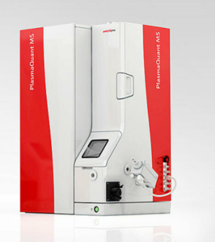
ICP-MS PlasmaQuant MS EliteAnalytik Jena, Germany · mass spectrometry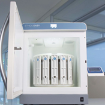
Ethos Easy microwave digestionMilestone, Italy · sample preparation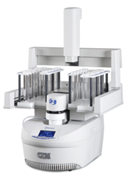
Discover SPD80 microwave digestionCEM, USA · sample preparation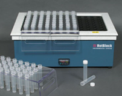
HotBlock digestion systemEnvironmental Express, Canada · sample preparation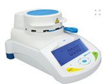
PMB moisture analyserAdam Equipment, UK · water content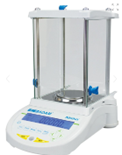
Nimbus analytical balancesAdam Equipment, UK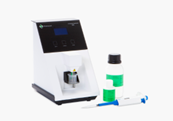
M926 chloride analyserSherwood, UK · chloride in liquids and extracts
Inductively coupled plasma, optical emission
PlasmaQuant 9000 Elite, Analytik Jena, Germany. Manufacturer page.
How it works
A radio-frequency coil turns a stream of argon into a plasma, a very hot ionised gas. A small amount of the sample solution is turned into a fine mist by the nebulizer, sorted by droplet size in the spray chamber, and carried into the plasma. There the sample is atomised and the atoms are excited; as they relax they emit light at wavelengths characteristic of each element. A monochromator spreads the light into a spectrum and a detector measures how bright each line is. Brightness is proportional to concentration.
Many elements are measured in one run across most of the periodic table, with good detection limits, precision and accuracy. Applications include heavy-metal contamination in soils and water, nutrient content of plants, elemental impurities in drug formulations and food, and material characterisation.
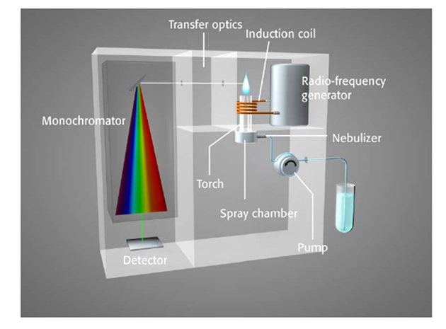
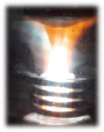
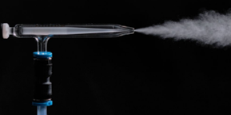
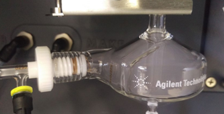
Instrument limits of quantification (LOQ), ICP-OES
The smallest concentration the instrument can reliably report, measured in a blank solution of 1 % nitric acid (a light matrix). Real samples with more acid, other acids, or a lot of a major element usually have a higher LOQ than listed. Ask us if your target concentration is close to these values. Original table (image).
| Element / line (nm) | mg/L | µg/L |
|---|---|---|
| Ag / 328.068 | 0.00032 | 0.32 |
| Al / 308.215 | 0.00658 | 6.58 |
| As / 193.698 | 0.01036 | 10.36 |
| B / 249.773 | 0.00079 | 0.79 |
| Ba / 233.527 | 0.0003 | 0.3 |
| Be / 313.107 | 7e-05 | 0.07 |
| Bi / 223.061 | 0.0051 | 5.1 |
| Ca / 317.933 | 0.00321 | 3.21 |
| Cd / 214.441 | 9e-05 | 0.09 |
| Co / 228.615 | 0.00085 | 0.85 |
| Cr / 267.716 | 0.00032 | 0.32 |
| Cu / 327.396 | 0.00093 | 0.93 |
| Fe / 259.940 | 0.00082 | 0.82 |
| Ga / 294.364 | 0.00319 | 3.19 |
| Hg / 184.886 | 0.0094 | 9.4 |
| In / 230.605 | 0.02087 | 20.87 |
| K / 766.491 | 0.05572 | 55.72 |
| Li / 670.791 | 0.0009 | 0.9 |
| Element / line (nm) | mg/L | µg/L |
|---|---|---|
| Mg / 279.078 | 0.01509 | 15.09 |
| Mn / 257.610 | 0.00013 | 0.13 |
| Mo / 202.030 | 0.0009 | 0.9 |
| Na / 589.592 | 0.00678 | 6.78 |
| Ni / 231.604 | 0.00037 | 0.37 |
| P / 214.914 | 0.09929 | 99.29 |
| Pb / 220.353 | 0.00132 | 1.32 |
| S / 181.975 | 0.59391 | 593.91 |
| Sb / 206.833 | 0.00706 | 7.06 |
| Se / 196.028 | 0.00718 | 7.18 |
| Si / 251.611 | 0.00316 | 3.16 |
| Sn / 189.927 | 0.00143 | 1.43 |
| Sr / 421.552 | 2e-05 | 0.02 |
| Ti / 334.941 | 0.00019 | 0.19 |
| Tl / 190.796 | 0.00861 | 8.61 |
| V / 292.401 | 0.00039 | 0.39 |
| Zn / 206.200 | 0.00056 | 0.56 |
Preparing samples yourself? Filter to remove solid particles (0.45 µm preferred). Provide at least 10 mL of prepared solution. Do not use HF acid. Always prepare blank solutions, preferably several, so reagent and vessel purity can be checked. The submission form is mandatory for prepared samples too.
Inductively coupled plasma, mass spectrometry
PlasmaQuant MS Elite, Analytik Jena, Germany. Manufacturer page.
How it works
The same plasma source atomises and ionises the sample, but instead of measuring light, the ions are pulled into a mass spectrometer and sorted by their mass-to-charge ratio. Each element, and each isotope of it, lands at its own mass. This gives much lower detection limits, often parts per trillion, and makes isotope ratios, speciation and trace-metal fingerprinting possible, which matters in geochemistry, archaeology, forensics and environmental work.
ICP-OES or ICP-MS?
ICP-MS is more sensitive, but it often needs the sample diluted more, which gives back part of that advantage. The two techniques also suffer different interferences. Phosphorus and sulfur, for instance, are straightforward on ICP-OES thanks to their UV emission lines, but difficult on ICP-MS because they ionise poorly and overlap with polyatomic species. We run both and pick the right one for each element; you do not have to choose.
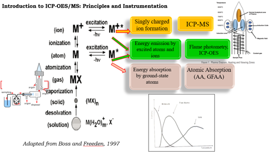
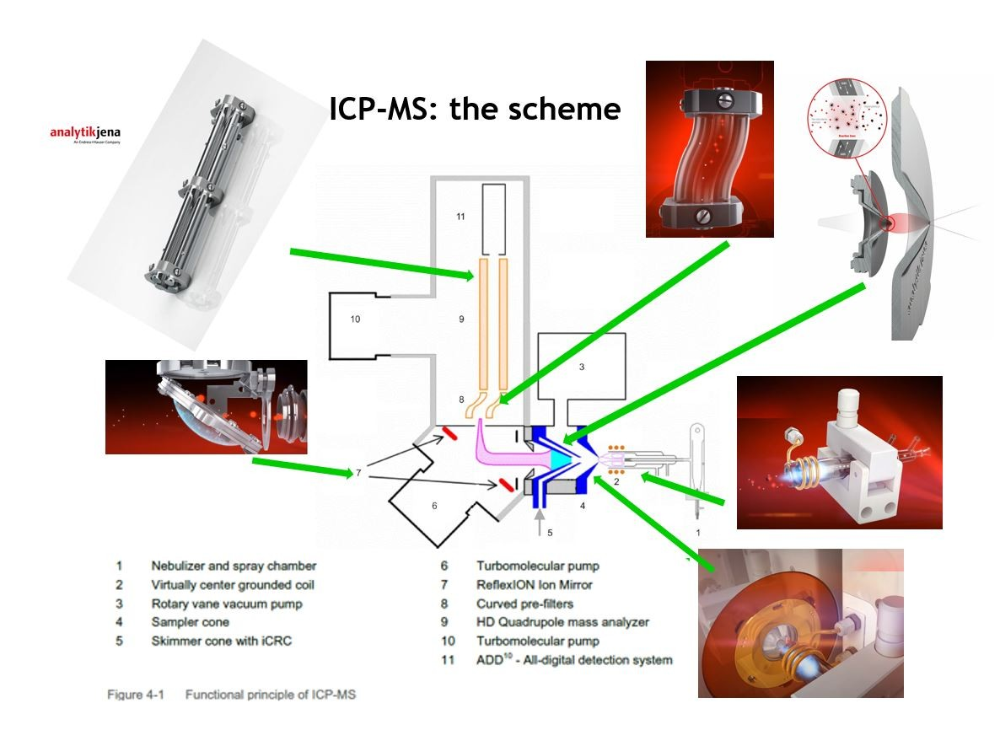
Instrument limits of quantification (LOQ), ICP-MS
Approximate instrument LOQ for the isotopes we routinely measure. H₂, He and NG indicate the collision-cell gas used for that isotope. Real-sample LOQs are higher after dilution and matrix effects. Original table (image).
| Isotope | LOQ µg/L |
|---|---|
| 27Al | 0.2 |
| 75As | 0.01 (H₂) / 0.02 (He) |
| 137Ba | 0.012 |
| 114Cd | 0.002 (NG) / 0.03 (He) |
| 59Co | 0.006 |
| 52Cr | 1.9 |
| 65Cu | 0.8 (H₂) / 0.04 (He) |
| 56Fe | 0.3 |
| 202Hg | 0.007 |
| 7Li | 0.007 |
| 55Mn | 0.05 |
| Isotope | LOQ µg/L |
|---|---|
| 95Mo | 0.0006 |
| 60Ni | 0.04 (H₂) / 0.03 (He) |
| 206+207+208Pb | 0.007 |
| 121Sb | 0.003 |
| 78Se | 0.01 |
| 118Sn | 0.001 |
| 47Ti | 0.3 |
| 205Tl | 0.004 |
| 238U | 0.003 |
| 51V | 0.9 |
| 66Zn | 0.6 |
How to send samples, step by step
No instrument booking. Every sample must arrive with a completed submission form, even if you have spoken to us by phone or email. Anonymous samples are not processed.
-
Talk to us first
Email Vasiliy Rosen with what the samples are and which elements you need. We will say how much material to collect and how to store it.
-
Collect and store correctly
Use plastic containers, never metal or aluminium foil. Dry and grind solids; acidify and chill waters. Details and minimum amounts are in the FAQ.
-
Fill in the submission form
Download the sample submission form (PDF) or the Word version. Describe the sample matrix carefully (solid or liquid, acids, solvents) and circle only the elements you really need. Attach an MSDS if you have one.
-
Bring or send the samples with the form
Delivery to the office of Shoshi Shalom, Ariowitch Laboratories, Sunday to Thursday, 8:00 to 16:00, tel. 08-948-91-52. Postal address: Herzl Street 229, Rehovot. Letters: ZBM Lab, P.O. Box 12, Rehovot 76100, Israel.
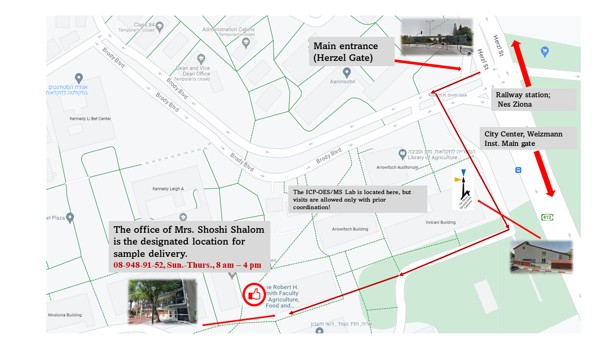
Frequently asked questions
How should I prepare and store samples for ICP analysis?
Check the literature in your field for specific preservation conditions. In general:
- Soil: air-dry and grind to below 2 mm.
- Composts and sewage sludges: air-dry and grind as fine as possible.
- Plant material: dry at 65 to 70 °C and grind to a fine powder.
- Water: store at +4 °C and acidify with nitric acid to pH below 2 as soon as possible.
- Biological samples: store at −20 to −80 °C.
Mercury (Hg) needs its own procedure: collect water in glass vials (not plastic) and acidify with HCl instead of HNO₃. This treatment is unsuitable for most other elements.
Avoid metal containers and aluminium foil, which contaminate samples. Glass vessels can leach B, Si and other elements at low pH, so use plastic whenever possible.
How much sample is needed?
A measurement consumes about 5 to 10 mL of solution. Water and dilute aqueous solutions are usually analysed as received; send 10 to 25 mL to allow repeats and dilutions. Most other samples are digested in strong mineral acids in a microwave system and made up to 25 to 50 mL. Minimum amounts:
| Sample type | Minimum amount |
|---|---|
| Water and clear dilute aqueous solutions | 10 – 25 mL |
| Aqueous solutions with high salt or organic matter | 5 – 10 mL |
| Metals and alloys | 0.1 – 1 g |
| Oils and non-aqueous liquids | about 20 g |
| Plant material, composts, sludges | 500 mg dry weight |
| Biological tissue, blood, faeces | > 1 g fresh weight |
Which sample types are difficult?
Samples must be completely mineralised and dissolved. A mixture of nitric acid, hydrochloric acid and hydrogen peroxide handles most matrices, but some need special treatment:
- Milk and casein-containing drinks may need a Kjeldahl-type digestion with H₂SO₄ if closed microwave digestion is unavailable.
- Soil and rock silicates dissolve in hydrofluoric acid (HF), but HF cannot be used in our system: it damages the quartz spray chamber and torch and leaches B, K and Si from the glassware.
- Mineral and vegetable oils: small amounts (100 to 200 mg) can be microwave-digested; otherwise a low-boiling organic phase is evaporated and the residue digested on the hot block. Never aspirate solvents such as methanol or acetone into the instrument, and never put them in closed microwave digestion.
These special methods raise matrix effects and background levels for many elements.
How do I submit samples?
Follow the four steps above: download and complete the submission form, then bring or send both form and samples to the office of Shoshi Shalom (08-948-91-52, Sunday to Thursday, 8:00 to 16:00). Questions: vasiliyr@savion.huji.ac.il.
People
- Vasiliy Rosen, Ph.D.ICP lab manager08-948-99-75
vasiliyr@savion.huji.ac.il - Yuliana Andrushchenko, M.Sc.Laboratory engineerYuliana.Andrushchenko@mail.huji.ac.il
- Shoshi ShalomAdministrative officer · sample delivery08-948-91-52
shoshis@savion.huji.ac.il - Orit Gal Garber, Ph.D.Department director08-948-92-25
oritg@savion.huji.ac.il